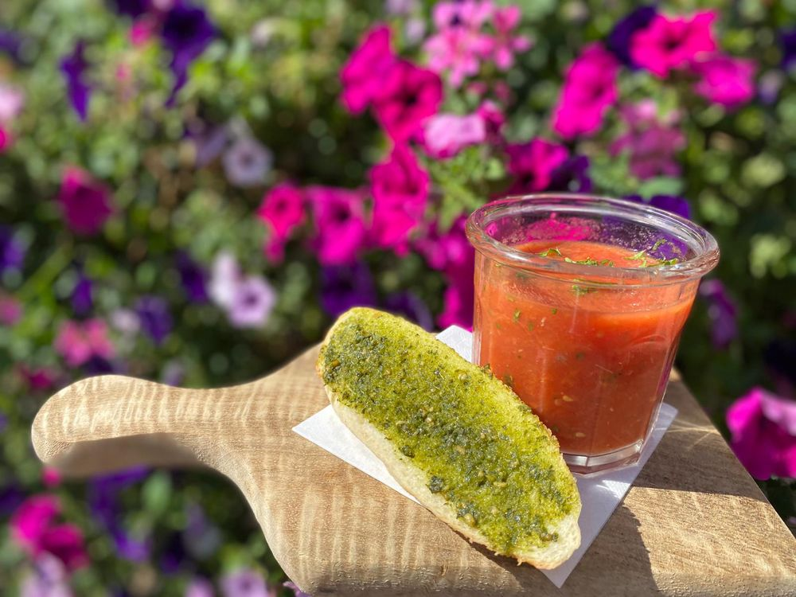
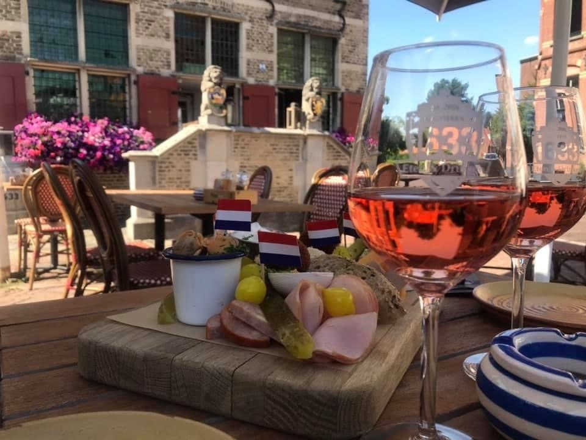
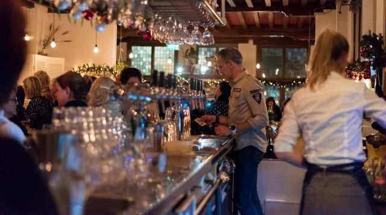

Lunch & 12-uurtjes
Broodsnedes, kroketten, eggs benedict en ons 12-uurtje, geserveerd op een etagère.
v.a. € 17,50Bekijk ›

Lunchen, borrelen of uitgebreid dineren in het voormalige Raadhuis aan de Dorpsstraat. Sinds 2018 de plek waar je binnenstapt alsof je thuiskomt.
Samen met een mediaschuwe brouwer hebben we vijf eigen bieren samengesteld. De namen komen van de vier zelfstandige rechtsgebieden die in 1810 samen de gemeente Halsteren vormden.
Een stukje Halsterse geschiedenis, gewoon van de tap.

Restaurant 1633 zit in het voormalige Raadhuis van Halsteren. Sinds 2018 zorgen gastheer Marco en zijn team ervoor dat het hier vertrouwd, gezellig en smakelijk is. Aan de muren hangen tientallen schilderijen en tekeningen van het Raadhuis, de meeste gekregen van onze gasten. Er kunnen er altijd nog meer bij.
"Alsof we thuiskomen!"
Dat horen we gasten regelmatig zeggen. En precies daar hoopten we op toen we de deuren openden.
Boven de brasserie ligt de oude Raadzaal, geschikt voor allerlei gelegenheden tot 40 personen. Vergaderen kan elke dag in overleg, ook buiten onze openingstijden. Ook voor een condoleance of een cursus denken we graag mee.
Het hele jaar door organiseren we avonden rond eten, wijn en muziek. Dit stond er het afgelopen seizoen op de agenda.
Uitstekend beoordeeld op Google.
"Heerlijk Eten & Drinken in een schitterend monumentaal pand. Zeer vriendelijke bediening en een uitgebreide kaart. Sfeervol terras. Een aanrader om langs te gaan. Voor lunch, diner of gewoon gezellig een drankje te doen."
Adrie JonkersGoogle"Lekker geluncht in de zon op t terras en n lekker biertje erbij. Vriendelijke bediening."
Wilco MertensGoogle"Vriendelijk en vlotte bediening. Lunch was voortreffelijk"
Corrine ReijngoudtGoogle"Weer top gegeten hier marco bedankt"
Cock MuldersGoogleBel ons voor een tafel, een groep of een vergadering. Tot snel bij 1633!
Even bellen is het snelst. Mailen kan natuurlijk ook, dan reageren we zo snel mogelijk.
Keuken open tot 21:00. Groepen, events en vergaderingen op alle dagen op afspraak.
1633 Eten & Drinken
Dorpsstraat 22
4661 HP Halsteren
Ons 12-uurtje in een geheel nieuwe stijl: gepresenteerd op een etagère. Perfect voor een ontspannen lunch met vrienden of familie.
De 12-uurtjes zijn niet verkrijgbaar op zondag: dan staan ze op ons brunchbuffet.
Elke zondag vanaf 11:00 uur presenteren we onze 1633-brunch.
Vers brood, kaas, zoet beleg en vleeswaren, soep, gekookte en gebakken eitjes, wentelteefjes, verschillende salades en desserts. En natuurlijk onze 12-uurtjes.
Een avond tafelen zonder haast. Een greep uit de dinerkaart.
Hoofdgerechten vanaf € 23. Bekijk de volledige dinerkaart.
Gewoon gezellig een drankje doen, op het terras of aan de bar.
En natuurlijk onze vijf eigen bieren van de tap.